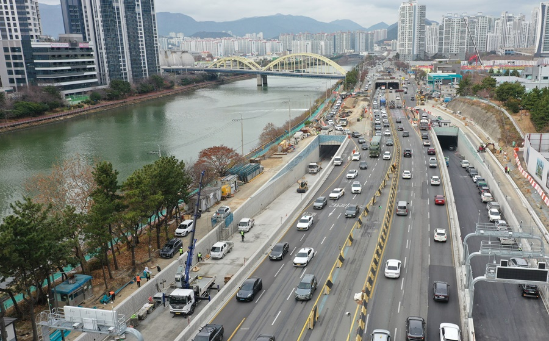
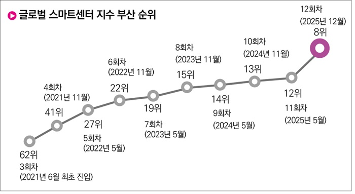

TRAFFIC
부산 대심도 2월 10일부터 달린다… 만덕~센텀 11분 돌파
핵심 키워드
#만덕센텀도시고속화도로
#통행시간30분단축
#스마트롤링시스템
동·서부산을 빠르고 안전하게 연결하는 첫 지하도로
북구 만덕에서 해운대 재송동을 잇는 9.62km 구간이 개통되어 도심 정체를 획기적으로 해소합니다.
주요 성과
기존 41.8분에서 11.3분으로 단축, 내부 순환도로망의 마지막 고리 완성

GLOBAL
부산, LA·두바이·홍콩 제쳤다… 스마트도시 ‘세계 8위’ 도약
핵심 키워드
#아시아태평양2위
#혁신지원부문세계1위
#부산미래산업전환펀드
아시아를 넘어 세계 10대 스마트도시로 우뚝 선 부산
영국 지옌(Z/Yen)사 발표 SCI 평가에서 62위로 시작해 역대 최고 순위인 8위를 기록하며 글로벌 위상을 입증했습니다.
주요 성과
금융지원 8위 등 6개 전 분야 세계 15위권 진입, 서울(39위) 대비 압도적 성적 거둬